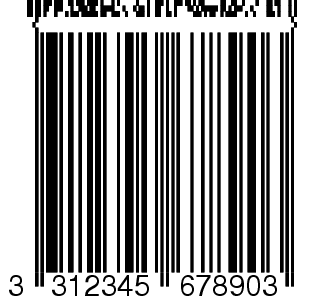

|
Zint Barcode Generator |
||
|---|---|---|
Composite symbols employ a mixture of components to give more comprehensive information about a product. The permissible contents of a composite symbol is determined by the terms of the GS1 General Specification. Composite symbols consist of a linear component which can be an EAN, UPC, GS1-128 or GS1 DataBar symbol, a 2D component which is based on PDF417 or MicroPDF417, and a separator pattern. The type of linear component to be used is determined using the -b or --barcode= switch or by adjusting symbol->symbology as with other encoding methods. Valid values are shown below.
|
Numeric Value |
Name |
Symbology |
|
110 |
BARCODE_EANX_CC |
Composite Symbol with EAN linear component |
|
111 |
BARCODE_EAN128_CC |
Composite Symbol with GS1-128 linear component |
|
112 |
BARCODE_RSS14_CC |
Composite Symbol with GS1 DataBar-14 linear component |
|
113 |
BARCODE_RSS_LTD_CC |
Composite Symbol with GS1 DataBar Limited component |
|
114 |
BARCODE_RSS_EXP_CC |
Composite Symbol with GS1 DataBar Extended component |
|
115 |
BARCODE_UPCA_CC |
Composite Symbol with UPC A linear component |
|
116 |
BARCODE_UPCE_CC |
Composite Symbol with UPC E linear component |
|
117 |
BARCODE_RSS14STACK_CC |
Composite Symbol with GS1 DataBar-14 Stacked component |
|
118 |
BARCODE_RSS14_OMNI_CC |
Composite Symbol with GS1 DataBar-14 Stacked Omnidirectional component |
|
119 |
BARCODE_RSS_EXPSTACK_CC |
Composite Symbol with GS1 DataBar Expanded Stacked component |
The data to be encoded in the linear component of a composite symbol should be entered into a primary string with the data for the 2D component being entered in the normal way. To do this at the command prompt use the --primary= command. For example:
zint -b 110 --mode=1 --primary=331234567890 -d "[99]1234-abcd"
This creates an EAN-13 linear component with the data "331234567890" and a 2D CC-A (see below) component with the data "(99)1234-abcd". The same results can be achieved using the API as shown below:
my_symbol->symbology
= 110;
my_symbol->option_1 =
1;
strcpy(my_symbol->primary,
"331234567890");
ZBarcode_Encode_and_Print(my_symbol,
"[99]1234-abcd");
EAN-2 and EAN-5 add-on data can be used with EAN and UPC symbols using the + symbol as described in section 5.1.3 and 5.1.4.
The 2D component of a composite symbol can use one of three systems: CC-A, CC-B and CC-C as described below. The 2D component type can be selected automatically by Zint dependant on the length of the input string. Alternatively the three methods can be accessed using the --mode= prompt followed by 1, 2 or 3 for CC-A, CC-B or CC-C respectively, or by using the option_1 variable as shown above.
NOTE: 2D component data starting with a production (AI 11) or expiration (AI 17) date must be followed by a batch number (AI 10). In the absence of real data this value can be entered as "0". This is due to a known problem concerning the way the encoding is optimised for date information. It is hoped this problem will be resolved in a later release of Zint.
This system uses a variation of MicroPDF417 which optimised to fit into a small space. The size of the 2D component and the amount of error correction is determined by the amount of data to be encoded and the type of linear component which is being used. CC-A can encode up to 56 numeric digits or an alphanumeric string of shorter length. To select CC-A use --mode=1.

This system uses MicroPDF417 to encode the 2D component. The size of the 2D component and the amount of error correction is determined by the amount of data to be encoded and the type of linear component which is being used. CC-B can encode up to 338 numeric digits or an alphanumeric string of shorter length. To select CC-B use --mode=2.
This system uses PDF417 and can only be used in conjunction with a GS1-128 linear component. CC-C can encode up to 2361 numeric digits or an alphanumeric string of shorter length. To select CC-C use --mode=3.

|
Stacked Symbologies |
|
Two-Track Symbols |